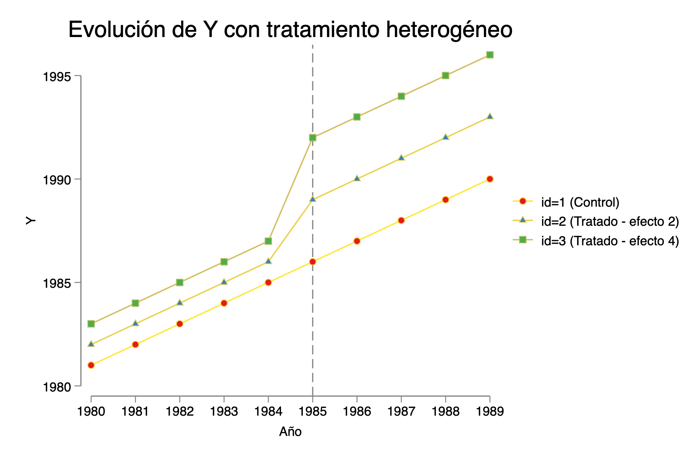
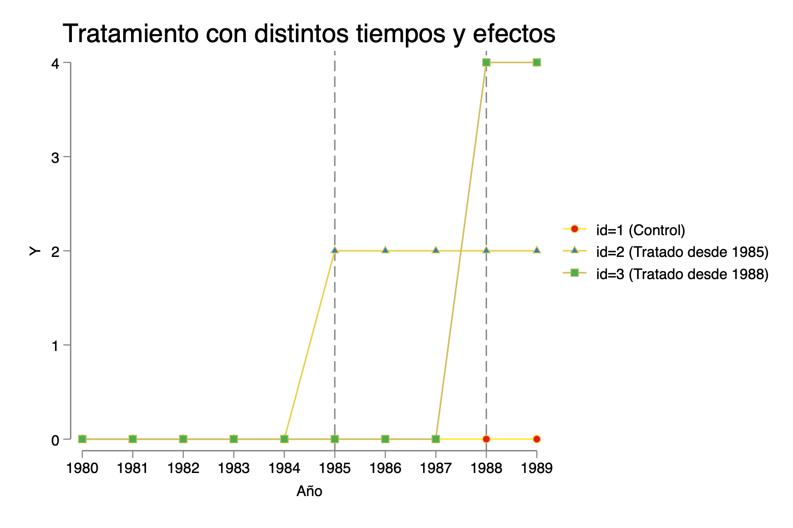

Capitulo 11 Datos de Panel, DiD y TWFE en Stata
Introducción a datos de panel
¿Qué es un panel?
Un panel (o datos longitudinales) sigue a las mismas unidades (individuos, firmas, municipios) a lo largo de múltiples períodos de tiempo. La estructura básica es:
\[Y_{it} = \alpha_i + \lambda_t + \beta X_{it} + \varepsilon_{it}\]
donde \(\alpha_i\) es un efecto fijo individual (todo lo que es constante para la unidad \(i\) y que puede estar correlacionado con \(X_{it}\)) y \(\lambda_t\) es un efecto fijo temporal (shocks comunes a todas las unidades en el período \(t\)).
Comandos básicos en Stata
xtset id t // declara el panel: id = unidad, t = tiempo
xtdes // describe la estructura: ¿balanceado? ¿T mínimo/máximo?
xtsum Y X // descompone varianza en within y between
xtline Y, overlay // spaghetti plot: trayectoria de Y por unidadLa descomposición de xtsum es fundamental:
| Variación | Qué mide | La explota… |
|---|---|---|
| between | Diferencias entre las medias de cada unidad | OLS pooled |
| within | Cambios de cada unidad alrededor de su propia media | FE, FD |
| overall | Ambas juntas | — |
Los cuatro estimadores y cuándo usarlos
| Estimador | Comando Stata | Consistente si… | Observaciones |
|---|---|---|---|
| OLS pooled | reg Y X, cluster(id) |
\(\text{Cov}(X_{it}, \alpha_i) = 0\) y exog. estricta | Ignora estructura de panel |
| Efectos fijos (FE) | xtreg Y X, fe |
Exog. estricta (aunque \(\text{Cov}(X_{it}, \alpha_i) \neq 0\)) | Elimina \(\alpha_i\) por within; inconsistente si \(X_{it}\) endógeno |
| Primeras diferencias (FD) | reg D.Y D.X |
Exog. estricta (aunque \(\text{Cov}(X_{it}, \alpha_i) \neq 0\)) | Elimina \(\alpha_i\) por diferencia; inconsistente si \(X_{it}\) endógeno |
| Efectos aleatorios (RE) | xtreg Y X, re |
\(\text{Cov}(X_{it}, \alpha_i) = 0\) y exog. estricta | Más eficiente que FE si supuesto OK |
Exogeneidad estricta: \(E[\varepsilon_{it} \mid X_{i1}, \ldots, X_{iT}, \alpha_i] = 0\) — el error idiosincrático no puede estar correlacionado con \(X\) en ningún período. Si hay endogeneidad en \(X_{it}\) (reverse causality, panel dinámico con \(Y_{it-1}\)), FE y FD también son inconsistentes.
Test de Hausman para elegir entre FE y RE:
La transformación within a mano
FE funciona restando la media individual de cada variable (“demeaning”):
bysort id: egen media_Y = mean(Y)
bysort id: egen media_X = mean(X)
gen Y_within = Y - media_Y
gen X_within = X - media_X
reg Y_within X_within // idéntico a xtreg Y X, fe (sin efectos de tiempo)Esto ilustra por qué FE elimina cualquier variable constante en el tiempo (no puedes estimar el efecto de género, país de nacimiento, etc. con FE).
FE vs. FD con T = 2
Con exactamente dos períodos, FE y FD son algebraicamente idénticos:
\[\Delta Y_i = \beta \cdot \Delta X_i + \Delta\varepsilon_i\]
es exactamente la regresión within con \(T=2\). Esta equivalencia es la base de la conexión entre DiD y datos de panel que exploramos a continuación.
DiD = FD = TWFE: la equivalencia en el caso 2×2
La equivalencia algebraica
En el caso más simple — 2 grupos (tratado/control) y 2 períodos (antes/después) — los siguientes cuatro estimadores producen exactamente el mismo número:
- DiD manual: \(\hat{\tau} = (\bar{Y}_{T,post} - \bar{Y}_{T,pre}) - (\bar{Y}_{C,post} - \bar{Y}_{C,pre})\)
- Regresión DiD:
reg Y trat post D— coeficiente de \(D\) (interacción) - Primeras diferencias:
reg D.Y D.D— coeficiente de \(\Delta D\) - TWFE:
reghdfe Y D, absorb(id t)— coeficiente de \(D\)
No es una aproximación ni un resultado asintótico — es una identidad algebraica que se cumple en cada muestra.
clear
set seed 1234
set obs 400
gen id = ceil(_n / 2) // 200 individuos
gen t = mod(_n - 1, 2) // t=0 (antes), t=1 (después)
gen trat = (id > 100) // grupo tratado: id 101–200
gen D = trat * (t == 1) // indicador de tratamiento efectivo
gen alpha_i = 2 * id / 200 + rnormal(0, 0.5)
gen eps = rnormal(0, 1)
gen Y = alpha_i + 1.5 * t + 3 * D + eps // τ = 3
xtset id t
* ── DiD manual (4 medias) ──────────────────────────────────────────────────────
quietly sum Y if trat==1 & t==0
scalar y_t0 = r(mean)
quietly sum Y if trat==1 & t==1
scalar y_t1 = r(mean)
quietly sum Y if trat==0 & t==0
scalar y_c0 = r(mean)
quietly sum Y if trat==0 & t==1
scalar y_c1 = r(mean)
scalar DiD_manual = (y_t1 - y_t0) - (y_c1 - y_c0)
* ── Regresión DiD clásica: Y = α + βD_i + γt + τ(D_i×t) ──────────────────────
reg Y trat t D, robust
scalar DiD_reg = _b[D]
* ── Primeras Diferencias (T=2): ΔY_i = a + τ·ΔD_i + Δε_i ─────────────────────
reg D.Y D.D, robust
scalar FD_2x2 = _b[D.D]
* ── TWFE: absorbe efectos fijos individual + temporal ──────────────────────────
reghdfe Y D, absorb(id t) vce(robust)
scalar TWFE_2x2 = _b[D]
di "DiD manual = " %7.4f DiD_manual
di "Regresión DiD = " %7.4f DiD_reg
di "FD = " %7.4f FD_2x2
di "TWFE = " %7.4f TWFE_2x2
* → los cuatro deben ser IDÉNTICOS — equivalencia algebraica ✓Panel largo, adopción simultánea
Con T > 2 períodos pero todos los tratados adoptando al mismo tiempo (\(t_0\)):
- DiD manual (media pre vs. post) = TWFE — mismo estimador, mismos pesos
- FD ≠ TWFE — FD solo usa las diferencias consecutivas \(\Delta Y_t = Y_t - Y_{t-1}\), por lo que solo el período de adopción (\(t_0 - 1 \to t_0\)) aporta \(\Delta D \neq 0\). Con \(T\) grande, FD usa mucho menos información y es menos eficiente, aunque sigue siendo consistente para el mismo \(\tau\).
clear
set seed 5678
local inicio = 1980
local fin = 1990
local tiempo = `fin' - `inicio' + 1
set obs `= 3 * `tiempo''
gen id = ceil(_n / `tiempo')
gen t = `inicio' + mod(_n - 1, `tiempo')
sort id t
xtset id t
gen D = (id >= 2) * (t >= 1985) // tratado desde 1985 para id 2 y 3
gen Y = id + 3 * (t - 1980) + 5 * D + rnormal(0, 0.5)
* DiD manual
quietly sum Y if id >= 2 & t >= 1985
scalar post_t = r(mean)
quietly sum Y if id >= 2 & t < 1985
scalar pre_t = r(mean)
quietly sum Y if id == 1 & t >= 1985
scalar post_c = r(mean)
quietly sum Y if id == 1 & t < 1985
scalar pre_c = r(mean)
di "DiD manual = " %6.3f (post_t - pre_t) - (post_c - pre_c) // ≈ 5
reghdfe Y D, absorb(id t) vce(robust)
di "TWFE = " %6.3f _b[D] // = DiD manual (equivalencia exacta)
reg D.Y D.D, robust
di "FD = " %6.3f _b[D.D] // ≠ TWFE con T>2 (menos eficiente)El supuesto de tendencias paralelas
¿Qué dice el supuesto?
DiD identifica el efecto causal \(\tau\) bajo el supuesto de tendencias paralelas:
En ausencia de tratamiento, la diferencia entre tratados y controles habría permanecido constante en el tiempo.
Formalmente: \(E[Y_{it}(0) - Y_{it-1}(0) \mid D_i = 1] = E[Y_{it}(0) - Y_{it-1}(0) \mid D_i = 0]\)
Si el tratado tenía una tendencia diferente (crecía más rápido o más lento) antes del tratamiento, DiD captura \(\tau\) más esa diferencia de tendencias → sesgo.
Diagnóstico en Stata
* Diagnóstico visual: medias observadas + tendencias lineales pre
xtdidregress (Y) (D), group(id) time(t)
estat trendplots // gráfico con líneas pre-tratamiento
estat trendplots, omeans // solo medias observadas
estat trendplots, ltrends // solo tendencias lineales
* Test formal (H0: pendientes pre-tratamiento son iguales)
estat ptrends
* p > 0.05 → no rechazamos H0 → tendencias paralelas plausibles ✓
* p < 0.05 → evidencia contra el supuesto ✗¿Qué hacer si se viola?
Opciones en orden de menor a mayor complejidad:
- Controlar tendencias lineales por grupo:
reg Y D i.t c.t#i.trat— asume que las tendencias pre son lineales y extrapolables - Event study: estima el efecto en cada período; los coeficientes pre-tratamiento deben ser ≈ 0 si el supuesto se cumple
- Diseño alternativo: buscar un grupo de control más comparable (matching + DiD)
* Controlar tendencias diferenciales (si se viola levemente)
gen trend = t - t0 // tiempo centrado en adopción
reghdfe Y D c.trend#i.trat, absorb(id t) vce(cluster id)Contexto rápido: TWFE con adopción escalonada
- ¿Qué verás? Cómo se comporta el estimador TWFE (two-way fixed effects) en distintos escenarios de DiD: 2×2, panel largo, más de dos unidades con heterogeneidad de efectos, y adopción escalonada.
- ¿Por qué importa? Con heterogeneidad y/o timing escalonado, TWFE puede promediar mal (incluso con pesos negativos), sesgando el estimador.
- ¿Cómo lo detectamos? Con la descomposición de Bacon y estudios de eventos.
- ¿Qué alternativas hay? Estimadores modernos: CSDID (Callaway & Sant’Anna), did_imputation (BJS), eventstudyinteract (Sun & Abraham), did_multiplegt, did2s, stackedev, etc.
💡 Nota de ejecución: Algunas secciones usan comandos/paquetes de SSC. Debes instalarlos al menos una vez (abajo incluyo la instalación con
ssc install …, replace).
Más unidades, mismo año de inicio, efectos heterogéneos
- 3 unidades (id=1 control; id=2 y 3 tratados desde 1985), con distinto tamaño de efecto: id=2 → τ=2, id=3 → τ=4.
- Muestra qué promedia TWFE cuando los efectos difieren entre tratados: el ATT verdadero (ponderado por obs. tratadas) = 3, y TWFE coincide porque no hay heterogeneidad dinámica.
clear
local unidades = 3
local inicio = 1980
local fin = 1989
local tiempo = `fin' - `inicio' + 1
local obs = `unidades' * `tiempo'
set obs `obs'
gen id = .
gen t = .
forvalues i = 1/`unidades' {
forvalues j = 0/`=`tiempo'-1' {
local obsnum = (`i' - 1)*`tiempo' + `j' + 1
replace id = `i' in `obsnum'
replace t = `inicio' + `j' in `obsnum'
}
}
sort id t
xtset id t
label variable id "Unidad"
label variable t "Año"
gen D = 0
replace D = 1 if id >= 2 & t >= 1985
label variable D "Tratamiento desde 1985 (id≥2)"
gen Y = 0
replace Y = id + t + cond(D==1, 0, 0) if id == 1
replace Y = id + t + cond(D==1, 2, 0) if id == 2
replace Y = id + t + cond(D==1, 4, 0) if id == 3
label variable Y "Variable dependiente"
twoway ///
(connected Y t if id==1, msymbol(circle) lcolor(blue) lwidth(medium)) ///
(connected Y t if id==2, msymbol(triangle) lcolor(red) lwidth(medium)) ///
(connected Y t if id==3, msymbol(square) lcolor(orange) lwidth(medium)) ///
, xline(1984.5, lpattern(dash) lcolor(gray)) ///
xlabel(`inicio'(1)`fin') ///
legend(order(1 "id=1 (Control)" 2 "id=2 (Tratado, τ=2)" 3 "id=3 (Tratado, τ=4)") pos(6) row(1)) ///
title("Caso 4: heterogeneidad entre tratados, mismo timing") ///
xtitle("Año") ytitle("Y") name(g4_hetero, replace)
xtreg Y D i.t, fe
reghdfe Y D, absorb(id t) vce(robust)
* ATT verdadero = (5×2 + 5×4) / 10 = 3
di "ATT verdadero (ponderado) = 3 — TWFE debería dar ≈ 3"
Más unidades, distinto tiempo de tratamiento (staggered) y distinto efecto
- id=2 se trata desde 1985; id=3 desde 1988 (escalonado).
- Los tamaños de efecto difieren (2 vs 4).
- Estimamos varias especificaciones y usamos Bacon decomposition para ver qué comparaciones y con qué peso componen el β̂ TWFE.
- Finalmente, estimamos pares 2×2 (id 1–2 e id 1–3) para ver los componentes del promedio.
clear
local unidades = 3
local inicio = 1980
local fin = 1989
local tiempo = `fin' - `inicio' + 1
local obs = `unidades' * `tiempo'
set obs `obs'
gen id = .
gen t = .
forvalues i = 1/`unidades' {
forvalues j = 0/`=`tiempo'-1' {
local obsnum = (`i' - 1)*`tiempo' + `j' + 1
replace id = `i' in `obsnum'
replace t = `inicio' + `j' in `obsnum'
}
}
sort id t
xtset id t
label variable id "Unidad"
label variable t "Año"
* Tratamiento escalonado: id=2 desde 1985 (τ=2), id=3 desde 1988 (τ=4)
gen D = 0
replace D = 1 if id==2 & t >= 1985
replace D = 1 if id==3 & t >= 1988
label variable D "Tratamiento escalonado"
gen Y = 0
replace Y = D * 2 if id==2 & D==1 // τ=2 cuando id=2 está tratado
replace Y = D * 4 if id==3 & D==1 // τ=4 cuando id=3 está tratado
label variable Y "Variable dependiente (Y=0 sin tratar; Y=τ con tratar)"
twoway ///
(connected Y t if id==1, msymbol(circle) lcolor(blue) lwidth(medium)) ///
(connected Y t if id==2, msymbol(triangle) lcolor(red) lwidth(medium)) ///
(connected Y t if id==3, msymbol(square) lcolor(orange) lwidth(medium)) ///
, xline(1984.5 1987.5, lpattern(dash) lcolor(gray)) ///
xlabel(`inicio'(1)`fin') ///
legend(order(1 "id=1 (Control)" 2 "id=2 (trata 1985, τ=2)" 3 "id=3 (trata 1988, τ=4)") pos(6) row(1)) ///
title("Caso 5: adopción escalonada") ///
xtitle("Año") ytitle("Y") name(g5_staggered, replace)
* TWFE y comparaciones por par
reghdfe Y D, absorb(id t) vce(robust)
xtreg Y D i.t if (id==1 | id==2), fe robust // par 1-2 (limpio)
xtreg Y D i.t if (id==1 | id==3), fe robust // par 1-3 (limpio)
* Descomposición de Bacon
* ssc install bacondecomp, replace // instalar si no está
bacondecomp Y D, ddetail
* Ref: Goodman-Bacon (2021), Journal of Econometrics
##Descomposición de Bacon y “efecto real” en DiD con adopción escalonada {-}
Cuando el tratamiento se adopta en momentos distintos (staggered DiD), el coeficiente de un modelo TWFE (efectos fijos de unidad y tiempo) no es un simple DiD clásico.
Goodman-Bacon muestra que ese coeficiente es un promedio ponderado de muchos DiD 2×2 construidos a partir de las comparaciones disponibles en tus datos.
En concreto, TWFE se puede escribir (a nivel intuitivo) como:
\[ \widehat\beta^{\text{TWFE}} \;=\; \sum_{k} w_k \,\widehat\beta^{(2\times2)}_k, \]
donde cada \(\widehat\beta^{(2\times2)}_k\) es un DiD “pequeño” entre dos grupos y dos periodos relevantes, y \(w_k\) es su peso (depende de tamaños muestrales y de cuánta variación en tratamiento aporta esa comparación).
Las tres familias de comparaciones 2×2
- Tratados vs. nunca tratados (T vs. U)
- Comparas una cohorte tratada con una nunca tratada (usando pre vs. post del tratado).
- Tratados temprano vs. tratados tarde (Te vs. Cl) — antes de que los tardíos reciban el tratamiento
- Los tardíos (aún no tratados) actúan como control provisional para los tempranos.
- Tratados tarde vs. tratados temprano (Tl vs. Ce) — después de que los tempranos ya están tratados
- Los tempranos (ya tratados) sirven como “control” no válido para los tardíos porque ya tienen efecto del tratamiento.
Clave: En (2) y (3) estás comparando tratados con tratados en momentos distintos.
Si el efecto varía por cohorte (entre unidades) o en el tiempo desde la adopción (dinámico), esas comparaciones no miden el efecto causal que normalmente te interesa.
¿Cuál es “el efecto real” que queremos reportar?
En DiD moderno, el objetivo suele ser el promedio de efectos entre las observaciones tratadas en los periodos post, ponderando por su tamaño:
\[ \textbf{ATT}_{\text{overall}} \;=\; \frac{\displaystyle\sum_{g,t:\,D=1} N_{g,t}\cdot \text{ATT}(g,t)} {\displaystyle\sum_{g,t:\,D=1} N_{g,t}}, \]
donde: - \(g\) es la cohorte (grupo que adopta en un mismo momento), - \(t\) es el periodo, - \(\text{ATT}(g,t)\) es el efecto en la cohorte-tiempo, - \(N_{g,t}\) es el número de observaciones tratadas en esa celda.
A esto lo llamamos aquí el “promedio del tratamiento” (o ATT overall).
TWFE coincide con este promedio solo si el efecto no varía ni por cohorte ni en el tiempo (homogeneidad).
¿Por qué TWFE puede fallar con heterogeneidad?
- Heterogeneidad entre cohortes: el tamaño del efecto difiere por unidad/grupo (p. ej., id=2 tiene +2; id=3 tiene +4).
- Heterogeneidad dinámica: el efecto cambia con el tiempo desde la adopción (p. ej., crece cada periodo post).
En ambos casos, TWFE mezcla comparaciones de tipo Te vs Cl y Tl vs Ce, que no capturan el \(\text{ATT}(g,t)\) “puro” porque los “controles” ya tienen (o tendrán) efecto en parte de la ventana.
El promedio ponderado resultante puede alejarse del ATT overall que quieres reportar.
Mini-ejemplos para fijar ideas
11.0.1 Caso 3 (tu ejemplo con tres unidades, mismo inicio y efecto por cohorte)
- Cohortes tratadas desde 1985:
- id=2 con efecto +2 (constante post)
- id=3 con efecto +4 (constante post)
- id=2 con efecto +2 (constante post)
- Ambos tienen el mismo número de periodos post (1985–1989: 5 cada uno).
ATT overall (promedio del tratamiento)
Promedio entre todas las observaciones tratadas post:
\[
\frac{5\cdot 2 \;+\; 5\cdot 4}{5+5} \;=\; \frac{10+20}{10} \;=\; \mathbf{3}.
\]
Aquí el promedio “intuitivo” sí es 3.
TWFE puede aproximarlo cuando solo hay heterogeneidad entre cohortes pero no dinámica y las ventanas son simétricas. Aun así, Bacon te dirá qué pesos están usando tus comparaciones.
Caso con adopción escalonada y efectos dinámicos
- id=2 adopta en 1985 y su efecto crece con \(t-\text{timing}\).
- id=3 adopta en 1988 y su efecto también crece con \(t-\text{timing}\).
ATT overall correcto:
haz el promedio de \(\text{ATT}(g,t)\) solo sobre celdas tratadas \((g,t)\), ponderado por \(N_{g,t}\).
TWFE:
promedia también comparaciones tratado vs tratado (tempranos vs tardíos y viceversa) ⇒ si los efectos crecen, esas comparaciones miden diferencias de efectos, no el efecto verdadero, y el promedio puede sesgarse (incluso con pesos negativos en ciertas descomposiciones).
Cómo leer la salida (intuición)
T vs U: comparaciones “limpias” (tratados vs nunca tratados).
Te vs ClyTl vs Ce: comparaciones entre tratados en distintos momentos.
- Si los pesos se concentran en estas dos últimas y sospechas heterogeneidad, no confíes en TWFE como estimador del ATT overall.
Buenas prácticas (en una lista corta)
- Define tu parámetro objetivo: normalmente, ATT (promedio sobre celdas tratadas).
- Estima \(\text{ATT}(g,t)\) con métodos modernos (p. ej., Callaway-Sant’Anna, Sun-Abraham, did-imputation, did2s).
- Promedia correctamente: construye el ATT ponderando por \(N_{g,t}\) solo sobre celdas tratadas.
- Usa Bacon como diagnóstico: revisa qué comparaciones y pesos aporta TWFE; si domina “tratado vs tratado” y hay heterogeneidad, reporta el estimador moderno.
- Qué quieres: el promedio del tratamiento entre las observaciones tratadas (ATT overall).
- Qué hace TWFE: un promedio ponderado de múltiples DiD 2×2, incluyendo tratado vs tratado.
- Cuándo coincide: solo con efectos homogéneos (sin variación por cohorte ni en el tiempo).
- Qué hacer: estima \(\text{ATT}(g,t)\) y promedia sobre tratadas; usa Bacon para auditar a TWFE.
¿Cómo interpretar la salida de bacondecomp?
Computing decomposition across 3 timing groups
including a never-treated group
-------------------------------
Y | Coefficient Std. err. z P>|z| [95% conf. interval]————-+—————————————————————- D | 2.709677 .3030118 8.94 0.000 2.115785 3.30357
**Bacon Decomposition:**
| Tipo | Beta | TotalWeight |
|---------------------|--------------|---------------|
| Early_v_Late | 2 | 0.2419354906 |
| Late_v_Early | 4 | 0.0967741935 |
| Never_v_timing | 2.780487813 | 0.6612903158 |
¿Qué significa cada fila?
Early_v_Late (β=2, peso=0.2419)
Compara tratados tempranos vs tratados tardíos en los períodos en que los tardíos aún no están tratados.
→ Identifica el efecto de la cohorte temprana (≈ 2 en tu simulación).Late_v_Early (β=4, peso=0.0968)
Compara tratados tardíos vs tratados tempranos cuando los tempranos ya están tratados.
→ Usa tratados como “control” (no ideal si hay heterogeneidad). En tu caso rinde ≈ 4 (efecto de la cohorte tardía).Never_v_timing (β≈2.7805, peso=0.6613)
Compara cohortes tratadas (temprana y tardía) vs nunca tratados.
→ Es un promedio (con pesos internos) de las comparaciones “tratados vs nunca tratados” a través de los distintos timings; por eso el β cae entre 2 y 4 y está más cerca de 2 porque la cohorte temprana aporta más periodos post.
Idea clave: El coeficiente TWFE final es la media ponderada de estos DiD 2×2.
¿Cuadra el promedio ponderado con el β de TWFE?
Sí. Los pesos suman 1: - 0.2419354906 + 0.0967741935 + 0.6612903158 = 1.0000 (≈)
Promedio ponderado: - Aporte Early_v_Late: 2 × 0.2419354906 = 0.483871 - Aporte Late_v_Early: 4 × 0.0967741935 = 0.387097 - Aporte Never_v_timing: 2.780487813 × 0.6612903158 = 1.838710
Suma: 0.483871 + 0.387097 + 1.838710 = 2.709677
→ Coincide con el β̂ de TWFE = 2.709677.
¿Por qué este β̂ puede no ser “el efecto real promedio”?
Lo que normalmente quieres reportar es el ATT overall: el promedio del efecto entre las observaciones tratadas (cohorte-tiempo) ponderado por su tamaño:
\[ \text{ATT}_{\text{overall}} = \frac{\sum_{g,t: D=1} N_{g,t}\cdot \text{ATT}(g,t)} {\sum_{g,t: D=1} N_{g,t}}. \]
- En adopción escalonada (tempranos con más años post que tardíos) y/o con efectos que difieren por cohorte o en el tiempo desde el tratamiento, TWFE mezcla tres tipos de comparaciones (incluyendo tratado vs tratado), y su promedio ponderado puede alejarse del ATT overall.
Ejemplo mental (ilustrativo):
Si la cohorte temprana vale 2 (más años post) y la tardía 4 (menos años post), el promedio correcto entre celdas tratadas puede ser algo como
\[
\frac{5\cdot 2 + 2\cdot 4}{5+2} = \frac{18}{7} \approx 2.571,
\]
mientras que TWFE te dio 2.7097 porque incluye las comparaciones Early_v_Late y Late_v_Early con pesos 24% y 9.7%.
¿Cómo usar esta descomposición en la práctica?
- Si Never_v_timing concentra casi todo el peso y los efectos son homogéneos, TWFE suele estar cerca del ATT overall.
- Si hay peso relevante en Early_v_Late o Late_v_Early y sospechas heterogeneidad (por cohorte o dinámica), no confíes en TWFE para el efecto promedio.
Recomendación: Estima \(\text{ATT}(g,t)\) con métodos modernos (p. ej., csdid, eventstudyinteract, did_imputation, did2s) y luego construye el ATT overall promediando solo sobre celdas tratadas con pesos \(N_{g,t}\).
Resumen en una línea
Tu tabla dice: el β̂ de TWFE (=2.7097) es un promedio ponderado de tres DiD 2×2; la mayor parte (66.1%) viene de tratados vs nunca tratados (≈2.78), y el resto de tratados vs tratados (2 y 4).
Conclusión: Para reportar “el efecto real promedio”, usa el ATT overall (promedio sobre observaciones tratadas), no el β̂ de TWFE cuando hay heterogeneidad o adopción escalonada.
Simulación grande (30 unidades × 60 periodos) con timings y efectos crecientes
- Asignamos a cada unidad una cohorte (0–5), un timing de adopción aleatorio, y un tamaño de efecto aleatorio.
- El outcome
Ycrece con el tiempo y acumula efecto post-tratamiento:effect * (t - timing). - Graficamos las trayectorias y estimamos TWFE + Bacon.
*********************************************************
clear
local units = 30
local start = 1
local end = 60
local time = `end' - `start' + 1
local obsv = `units' * `time'
set obs `obsv'
egen id = seq(), b(`time')
egen t = seq(), f(`start') t(`end')
sort id t
xtset id t
lab var id "Panel variable"
lab var t "Time variable"
set seed 13082021
cap drop Y
cap drop D
cap drop cohort
cap drop effect
cap drop timing
gen Y = 0 // outcome variable
gen D = 0 // intervention variable
gen cohort = . // total treatment variables
gen effect = . // treatment effect size
gen timing = . // when the treatment happens for each cohort
levelsof id, local(lvls)
foreach x of local lvls {
local chrt = runiformint(0,5)
replace cohort = `chrt' if id==`x'
}
levelsof cohort , local(lvls) // let all cohorts be treated for now
foreach x of local lvls {
// (a) effect
local eff = runiformint(2,10)
replace effect = `eff' if cohort==`x'
// (b) timing
local timing = runiformint(`start' + 5,`end' - 5)
replace timing = `timing' if cohort==`x'
replace D = 1 if cohort==`x' & t>= `timing'
}
replace Y = id + t + cond(D==1, effect * (t - timing), 0)
levelsof cohort
local items = `r(r)'
local lines
levelsof id
forval x = 1/`r(r)' {
qui summ cohort if id==`x'
local color = `r(mean)' + 1
colorpalette tableau, nograph
local lines `lines' (line Y t if id==`x', lc("`r(p`color')'") lw(vthin)) ||
}
twoway ///
`lines', legend(off)
xtreg Y i.t D, fe
reghdfe Y D, absorb(id t)
bacondecomp Y D, ddetail🔍 Claves: Este es el entorno “realista” donde TWFE más sufre: heterogeneidad + escalonamiento + dinámicas → pesos complicados (a veces negativos).
“Soluciones”: estimadores modernos y gráfico comparativo de estudios de evento
Explicación didáctica
Simulamos nuevamente con first_treat y rel_time para construir leads (
F_#) y lags (L_#).Definimos cohortes de nunca tratados y variables de cohorte/gvar para los métodos que lo requieren.
Instalamos paquetes (hazlo una sola vez; luego puedes comentar estas líneas).
Estimamos:
- TWFE (con
reghdfe), - csdid,
- did_imputation,
- did_multiplegt_dyn,
- eventstudyinteract,
- did2s,
- stackedev;
y graficamos todos juntos con
event_plot.
- TWFE (con
⚠️ Detalle técnico: en
reghdfe Y L_* F_*, absorb(id t) cluster(i), tu código agrupa pori. Si tu panel esid, lo más habitual escluster(id). Mantengo tu comando exactamente (como pediste), pero sugiero revisar el cluster según tu diseño.
**********************************************************************************************
*Soluciones
clear
local units = 30
local start = 1
local end = 60
local time = `end' - `start' + 1
local obsv = `units' * `time'
set obs `obsv'
egen id = seq(), b(`time')
egen t = seq(), f(`start') t(`end')
sort id t
xtset id t
set seed 20211222
gen Y = 0 // outcome variable
gen D = 0 // intervention variable
gen cohort = . // treatment cohort
gen effect = . // treatment effect size
gen first_treat = . // when the treatment happens for each cohort
gen rel_time = . // time - first_treat
levelsof id, local(lvls)
foreach x of local lvls {
local chrt = runiformint(0,5)
replace cohort = `chrt' if id==`x'
}
levelsof cohort , local(lvls)
foreach x of local lvls {
local eff = runiformint(2,10)
replace effect = `eff' if cohort==`x'
local timing = runiformint(`start',`end' + 20) //
replace first_treat = `timing' if cohort==`x'
replace first_treat = . if first_treat > `end'
replace D = 1 if cohort==`x' & t>= `timing'
}
replace rel_time = t - first_treat
replace Y = id + t + cond(D==1, effect * rel_time, 0) + rnormal()
// generate leads and lags (used in some commands)
summ rel_time
local relmin = abs(r(min))
local relmax = abs(r(max))
// leads
cap drop F_*
forval x = 2/`relmin' { // drop the first lead
gen F_`x' = rel_time == -`x'
}
//lags
cap drop L_*
forval x = 0/`relmax' {
gen L_`x' = rel_time == `x'
}
// generate the control_cohort variables (used in some commands)
gen never_treat = first_treat==.
sum first_treat
gen last_cohort = first_treat==r(max) // dummy for the latest- or never-treated cohort
// generate the gvar variabls (used in some commands)
gen gvar = first_treat
recode gvar (. = 0)
*************************************
*Los colegas creativos
// supporting packages
ssc install schemepack, replace
ssc install avar, replace
ssc install reghdfe, replace
ssc install event_plot, replace
ssc install palettes, replace
ssc install colrspace, replace
// DiD packages
ssc install drdid, replace
ssc install csdid, replace
ssc install did_imputation, replace
ssc install eventstudyinteract, replace
ssc install did_multiplegt, replace
ssc install stackedev, replace
ssc install did2s, replace
************
*** TWFE ***
************
reghdfe Y L_* F_*, absorb(id t) cluster(i)
estimates store twfe
*************
*** csdid ***
*************
csdid Y, ivar(id) time(t) gvar(gvar) notyet
estat event, window(-10 10) estore(csdd)
***********************
*** did_imputation ***
***********************
did_imputation Y i t first_treat, horizons(0/10) pretrend(10) minn(0)
estimates store didimp
***********************
*** did_multiplegt ***
***********************
did_multiplegt_dyn Y id t D, effects(10) placebo(10) cluster(id)
matrix didmgt_b = e(estimates)
matrix didmgt_v = e(variances)
*****************************
*** eventstudyinteract ***
*****************************
eventstudyinteract Y L_* F_*, vce(cluster id) absorb(id t) cohort(first_treat) control_cohort(never_treat)
matrix evtstint_b = e(b_iw)
matrix evtstint_v = e(V_iw)
***************
*** did2s ***
***************
did2s Y, first_stage(id t) second_stage(F_* L_*) treatment(D) cluster(id)
matrix did2s_b = e(b)
matrix did2s_v = e(V)
******************
*** stackedev ***
******************
stackedev Y F_* L_* ref, cohort(first_treat) time(t) never_treat(never_treat) unit_fe(id) clust_unit(id)
matrix stackedev_b = e(b)
matrix stackedev_v = e(V)
colorpalette tableau, nograph
event_plot twfe csdd didimp dcdh_b#dcdh_v sa_b#sa_v stackedev_b#stackedev_v did2s_b#did2s_v , ///
stub_lag( L_# Tp# tau# Effect_# L_# L_# L_# ) ///
stub_lead(F_# Tm# pre# Placebo_# F_# F_# F_# ) ///
together perturb(-0.30(0.10)0.30) trimlead(20) trimlag(20) noautolegend ///
plottype(scatter) ciplottype(rspike) ///
lag_opt1(msymbol(+) msize(1.2) mlwidth(0.3) color(black)) lag_ci_opt1(color(black) lw(0.15)) ///
lag_opt2(msymbol(lgx) msize(1.2) mlwidth(0.3) color("`r(p1)'")) lag_ci_opt2(color("`r(p1)'") lw(0.15)) ///
lag_opt3(msymbol(Dh) msize(1.2) mlwidth(0.3) color("`r(p2)'")) lag_ci_opt3(color("`r(p2)'") lw(0.15)) ///
lag_opt4(msymbol(Th) msize(1.2) mlwidth(0.3) color("`r(p3)'")) lag_ci_opt4(color("`r(p3)'") lw(0.15)) ///
lag_opt5(msymbol(Sh) msize(1.2) mlwidth(0.3) color("`r(p4)'")) lag_ci_opt5(color("`r(p4)'") lw(0.15)) ///
lag_opt6(msymbol(Oh) msize(1.2) mlwidth(0.3) color("`r(p5)'")) lag_ci_opt6(color("`r(p5)'") lw(0.15)) ///
lag_opt7(msymbol(V) msize(1.2) mlwidth(0.3) color("`r(p6)'")) lag_ci_opt7(color("`r(p6)'") lw(0.15)) ///
graph_opt( ///
title("DiD event study plot") ///
xtitle("") ///
ytitle("Average effect") xlabel(-20(2)20) ///
legend(order(1 "TWFE" 3 "csdid (CS 2020)" 5 "did_imputation (BJS 2021)" 7 "did_multiplegt (CD 2020)" 9 "eventstudyinteract (SA 2020)" 11 "stackedev (CDLZ 2019)" 13 "did2s (G 2021)") pos(6) rows(3) region(style(none))) ///
xline(-0.5, lc(gs8) lp(dash)) ///
yline( 0, lc(gs8) lp(dash)) ///
) Puntos de aprendizaje (resumen)
TWFE funciona bien en 2×2 simples, pero con heterogeneidad y timing escalonado puede:
- Promediar comparaciones no deseadas,
- Asignar pesos negativos,
- Usar como “controles” unidades ya tratadas.
La descomposición de Bacon ayuda a entender quién compara con quién y con qué peso.
Estimadores modernos (csdid, eventstudyinteract, did_imputation, did2s, did_multiplegt, stackedev) estiman ATT(g,t) y permiten event studies consistentes, evitando sesgos típicos de TWFE en estos contextos.
Notas prácticas de ejecución
- Instalación: Ejecuta una vez las líneas
ssc install …, replace(están comentadas en el do-file para no reinstalar cada vez). - Clustering: El cluster correcto es el nivel donde varía el tratamiento — normalmente
cluster(id)en DiD con unidades de panel. xtdidregress: En Stata 17/18 el comando oficial esxtdidregress(noxtdidreg).- Semillas: Todos los DGPs del do-file incluyen
set seedpara garantizar replicabilidad.
Descarga los archivos
Los tres archivos replican los mismos ejemplos con el mismo DGP (\(Y = \tau \cdot D\), máximo \(Y = 4\)).
| Lenguaje | Archivo | Descarga |
|---|---|---|
| Stata | 11_stata_v2.do |
Descargar Stata |
| R | 11_twfe.R |
Descargar R |
| Python | 11_twfe.py |
Descargar Python |
Paquetes necesarios:
- Stata:
ssc install reghdfe bacondecomp csdid drdid eventstudyinteract did_imputation did2s jwdid, replace - R:
install.packages(c("fixest", "bacondecomp", "did", "ggplot2", "dplyr")) - Python:
pip install pyfixest pandas numpy matplotlib